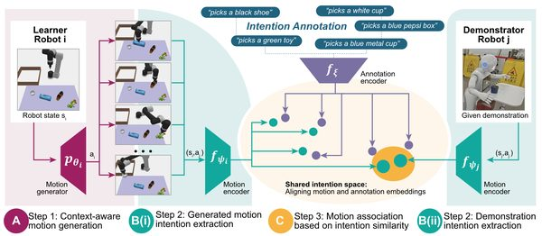
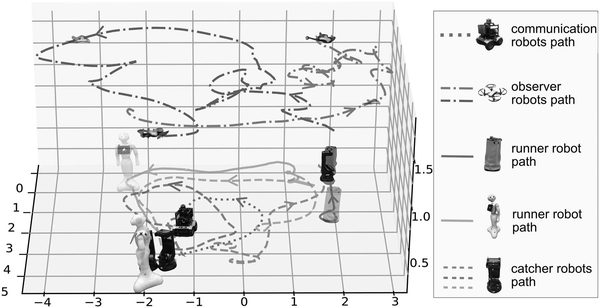

Coordinating heterogeneous teams
Heterogeneous Multi-Robot Systems
This research thread focuses on intelligent coordination of heterogeneous multi-robot teams and cross-robot behavior transfer, developing methods for cooperative multi-agent learning and intention-aligned adaptation across diverse robotic platforms.
- multi-robot coordination
- cross-robot adaptation
- self-play
- intention alignment
- heterogeneous robots

Science Robotics2026
Cross-robot Behavior Adaptation Through Intention Alignment
A cross-robot imitation learning framework that transfers behaviors through shared high-level intention representations rather than low-level action matching, validated across seven robot platforms and 30 collaborative scenarios.

IEEE T-RO2023
Asymmetric Self-Play-Enabled Intelligent Heterogeneous Multirobot Catching System Using Deep Multiagent Reinforcement Learning
Asymmetric self-play framework for training heterogeneous multi-robot catching systems using deep multiagent reinforcement learning.